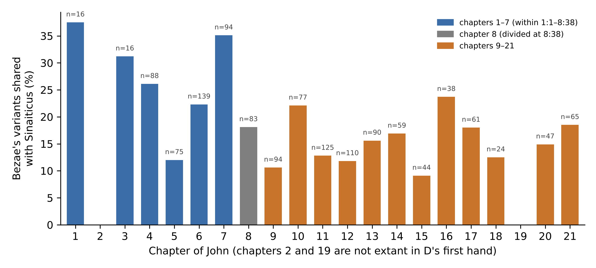
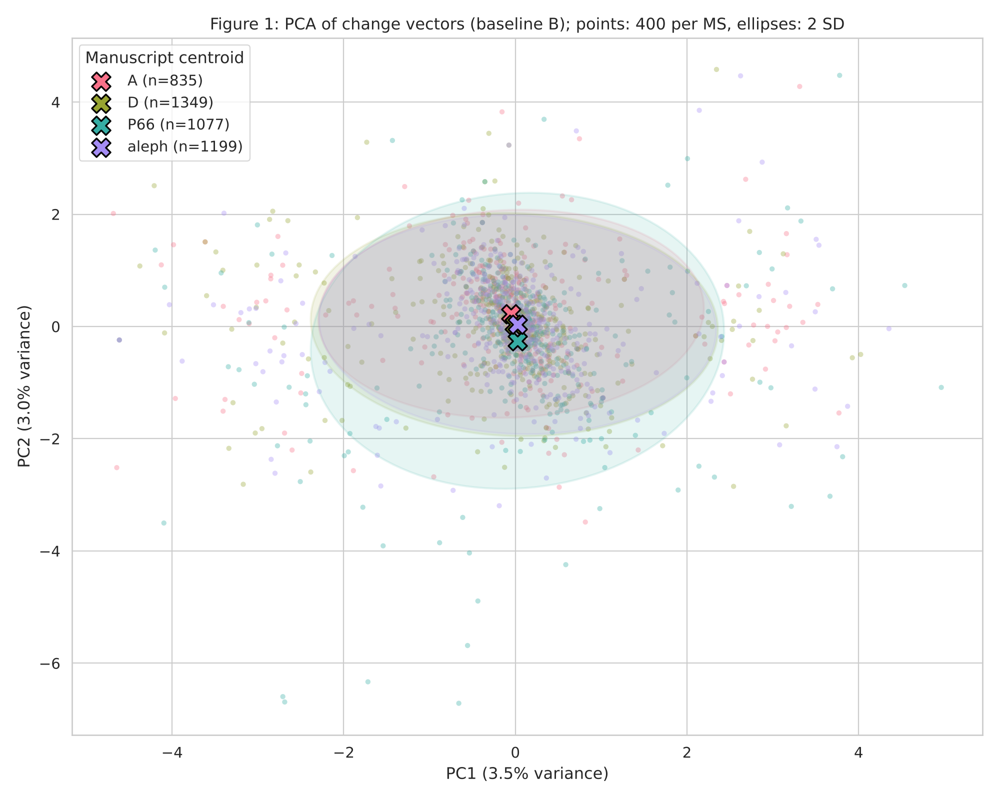

Results
The results follow the order of the article: the variant typology first, the contextual
embeddings second, and then the question whether the embeddings add anything to the
typology. Every value on this page is read from the pipeline output files by
docs/prepare_website_data.py.
1. Witnesses differ in the kinds of changes they introduce
Article § 5.1, Table 2 and Figures 1–2
Every divergence of a witness from the baseline is annotated as an addition, omission, word-order shift, morphological substitution (another form of the same lexeme) or lexical substitution (a different lexeme). The distributions differ between witnesses under every baseline. The effects are small, as expected for witnesses that share most of their text, and clearly distinguishable from the within-chapter permutation null.
Association between witness and variant type
Bezae: recasting phrases rather than replacing words
A replacement block whose two sides differ in length is annotated as one lexical substitution. Such blocks account for about two-thirds of Bezae’s lexical excess; its share of equal-length replacements lies within the permutation null.
Sinaiticus in John 1:1–8:38
Fee (1968) showed that in John 1:1–8:38 the text of Sinaiticus agrees characteristically with the “Western” tradition. The variant tables register the change: Bezae shares far more of its variants with Sinaiticus before 8:38 than after it, under every baseline. A profile of “Sinaiticus in John” is therefore a profile of two texts.

supplementary_checks.py).
2. Witnesses are separated in embedding space, but only just
Article § 5.2, Table 3
Each divergence is embedded in its context with Ancient-Greek-BERT and represented by its change vector (witness window minus baseline window). Inter-manuscript distances between change vectors are larger than intra-manuscript distances, and the difference is distinguishable from the permutation null, also when the vectors are averaged to the verse and whole witness–verse units are permuted (d = 0.016, p < 0.001). Substantively it is close to zero: the two distance distributions overlap almost completely, and an unsupervised clustering recovers essentially nothing of which witness produced a vector.
Cohen’s d for each pair of witnesses (baseline B)
3. Within a variant class the separation all but disappears
Article § 5.3, Table 4
If one witness adds more and another omits more, the model might separate them only because additions and omissions produce different change vectors. Within single classes, where the type composition cannot differ, d lies close to zero. The largest value, for morphological substitutions, is distinguishable from its null against B but not against A or ℵ, and its bootstrap interval includes zero. This does not make the corpus-wide d a by-product of the type mixture: with the witness labels shuffled within chapter × type, so that each witness keeps its mixture of types, d falls to 0.001 against 0.014 observed (p < 0.001). The separation is real but very weak, runs across the classes and is concentrated in Alexandrinus.
4. No sign that the separation is lexical
Article § 5.4, Table 5 and Figure 3
Function words only restricts the population of variants to those whose
readings consist entirely of closed-class words and leaves the contexts intact.
Content masked keeps every variant and hides the content words in the
input. The random-masking control hides the same number of words at random
positions, in five draws. Every reduced condition has a bootstrap interval that includes
zero. If the vocabulary carried the separation, masking content words should cost more than
masking at random; if anything, it costs less. The difference between the two conditions
(0.004) is not itself distinguishable from zero: bootstrapped in pairs over chapters, its
95 % interval runs from −0.006 to 0.015 (supplementary_checks.py). The
result is negative with respect to vocabulary rather than a positive finding about what
carries the separation. Two readings are compatible with it: the model may respond to the
grammatical frame of the variants, or masking the content words may leave visible the very
function words in which the variant types differ; the data do not decide between them.
5. Profiles show partial geometric stability
Article § 5.5, Table 6 and Figure 4
The profiles are recomputed on the odd and on the even chapters. The two halves of a witness lie closer to each other than to the halves of other witnesses, and three of the four witnesses are nearest to their own other half; the exception is Sinaiticus, whose odd-chapter profile lies nearer to the even-chapter profile of P66. The rank order of the six inter-witness distances is not reproduced. The embedding-level results are weaker under the alternative baselines; the typological results hold under all of them (Finding 1).
Full odd/even distance matrix (baseline B)
Split halves of the typology
Against B, the association between witness and type is present in each half separately, and in both halves the same witness has the largest share in four of the five classes. Under every baseline the two halves of a witness differ by fewer variants than the halves of different witnesses (gap p = 0.002), but not every half is nearest to its own witness: the typology is stable in what distinguishes the witnesses, not finely enough to match every half to its witness.
Exploratory views
Not part of the article’s argument; shown for transparency
Clustering signal by amount of text
ARI of a k-means clustering against the witness labels, recomputed on the variants of the first n chapters. It stays close to zero however much text is added.
Chapter profiles
Cosine distance between each chapter profile of a witness and its whole-Gospel profile (baseline B). Chapter profiles rest on few variants and are noisy; the heat map is not used for inference.
Two-dimensional projection
